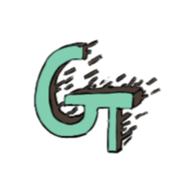
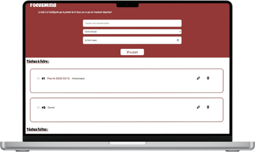
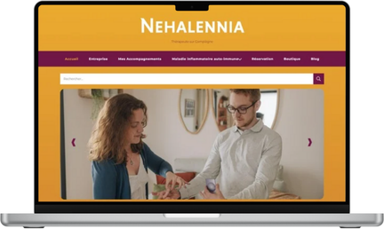
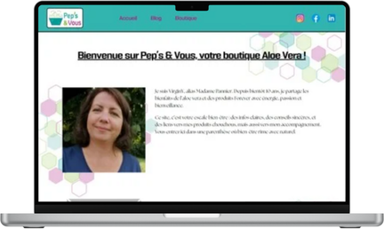
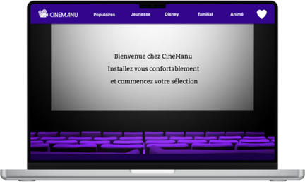
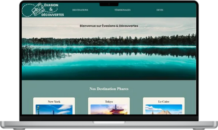
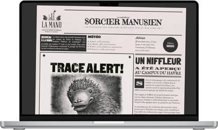
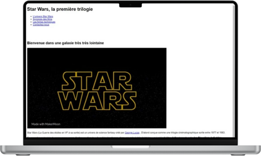
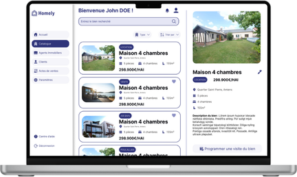
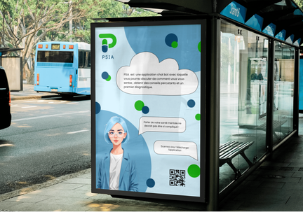

Garance Thiroux
Développeuse Full-stack
Je suis une développeuse junior full-stack encore en étude à La Manu de Compiègne, spécialisée dans le frontend mais avec des compétences en backend.Ma particularité ? Ma double-casquette en design qui me permet de suivre l'entièreté du cycle de création d'un projet web, de la maquette à la mise en production.
Mes projets en développement

FocusMind
FocusMind est une todo-list fait à partir de Javascript (début de
la programmation orientée objet)

Nehalennia
Nehalennia est le site vitrine fait sur WordPress pour un client.

Pep's & Vous
Pep's & Vous est un site vitrine fait sur WordPress pour un
client.

Cinema La Manu
Bibliothèque de film pour un cinema en JS, en utilisant une API.

Evasion et Découverte
Création d'un site vitrine pour une agence de voyage. Présentation
des voyages populaires et formulaire pour une demande de devis.

Glacier La Manu
Début sur les flexbox (HTML et CSS) pour un site vitrine à
l'attention d'une entreprise fictive de vendeur de glaces.

Journal Harry Potter
Création d'un journal Harry Potter pour s'entrainer avec
différentes typographies (HTML et CSS)

Filmographie Star Wars
Découverte du language HTML pour la création de la filmographie de
Star Wars.
Mes projets en design

S.a.HLM
Création de maquettes graphiques de la version mobile et desktop
du guide de terrain de S.a.HLM de l'Oise.

Site immobilier
Création d'une maquette graphique pour une agence immobilière en
suivant le principe d'atomic design.
Cinéma
Maquette graphique d'un site de cinéma qui sera intégré en HTML,
CSS et JS.

PSIA
Création d'une affiche de sensibilisation à la santé
psychologique.